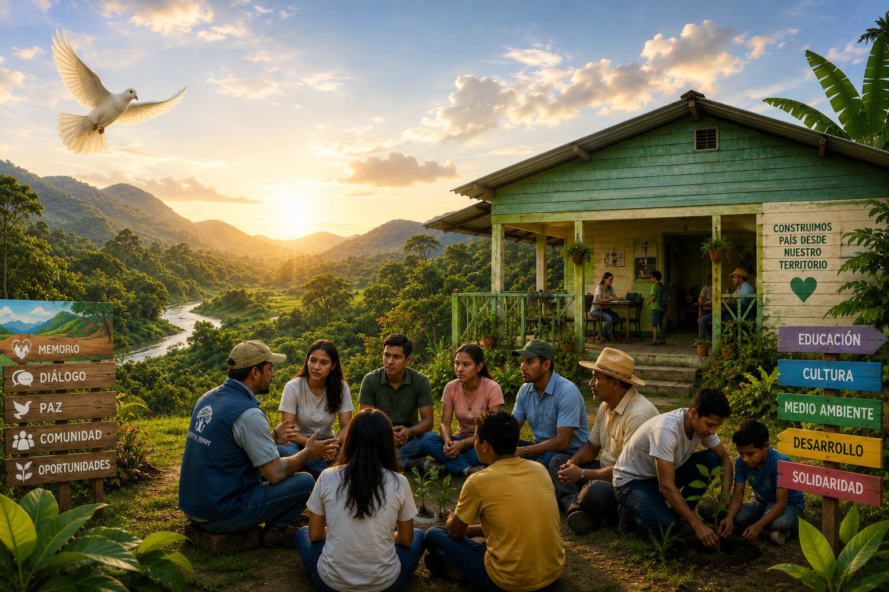
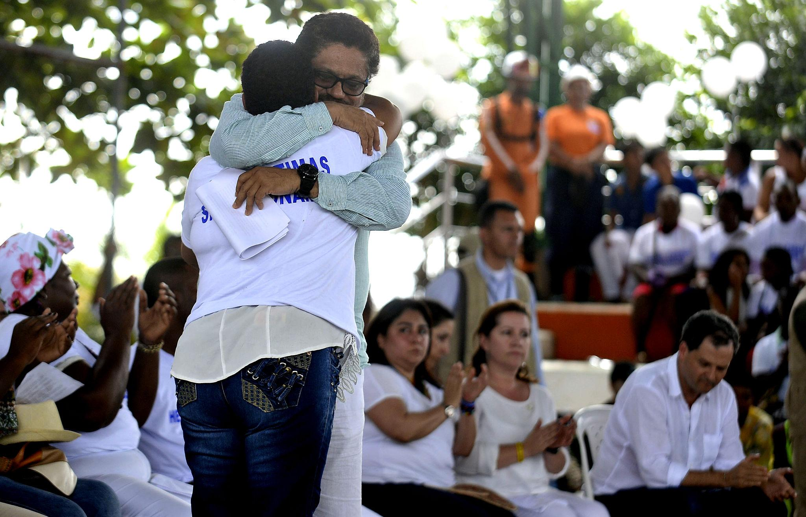
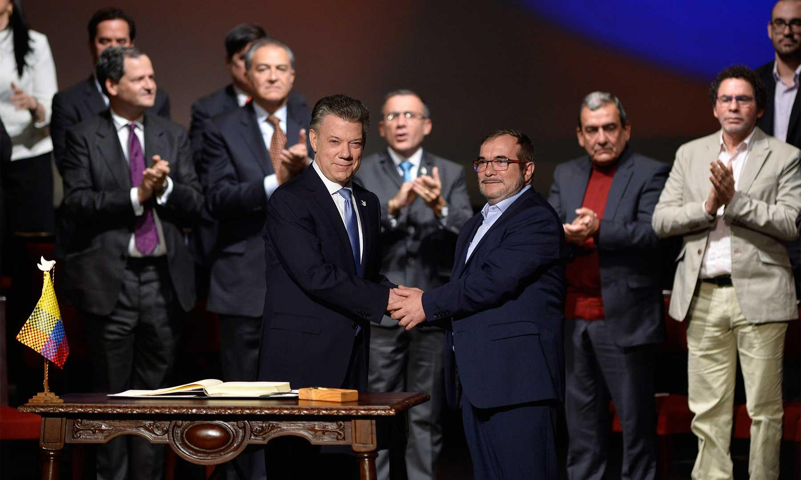
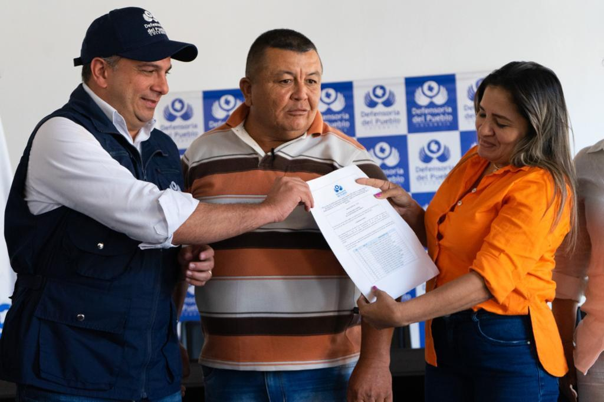
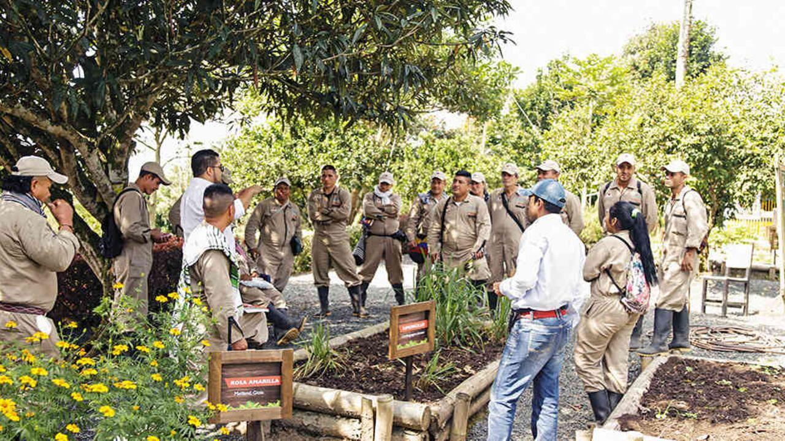
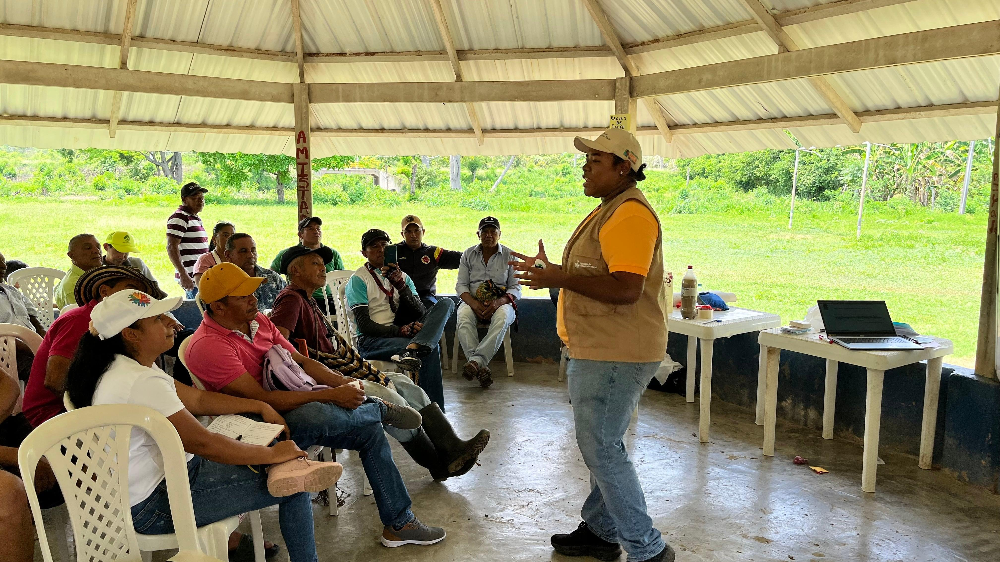
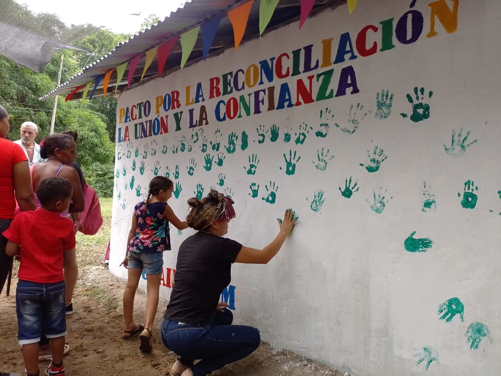

Colombia · Posconflicto · Territorio
Construyendo la paz desde las raíces
Acompañamos a comunidades en el proceso de sanación, memoria histórica y reconstrucción del tejido social en territorios afectados por el conflicto armado.
Acompañamos a comunidades en el proceso de sanación, memoria histórica y reconstrucción del tejido social en territorios afectados por el conflicto armado.

El posconflicto en Colombia comenzó a tomar forma con la firma del Acuerdo de Paz en 2016, poniendo fin a más de cinco décadas de enfrentamiento entre el Estado y las FARC-EP. Sin embargo, la paz no llega sola con la firma de un documento: requiere años de trabajo profundo en las comunidades.
Fundación Raíces de Paz nació en 2007, mucho antes del acuerdo, con la convicción de que la reconciliación empieza por el territorio. Trabajamos desde la base, con líderes comunales, mujeres víctimas, excombatientes en proceso de reintegración y jóvenes que crecieron en medio del conflicto.
Hoy, nuestra labor abarca desde la atención psicosocial y la memoria histórica hasta el acompañamiento productivo y la restauración ambiental de las zonas más golpeadas por la guerra.
Surge en el Caquetá como respuesta a la crisis humanitaria de los territorios.
Iniciamos el acompañamiento a excombatientes en zonas rurales.
Apoyamos mesas de escucha con víctimas en 8 departamentos.
Empezamos el trabajo en zonas de concentración y reintegración.
Presencia activa en 38 municipios del país con equipos locales.
Enfrentamos disidencias, desplazamientos y brechas de género persistentes.
Desde el inicio de las negociaciones hasta la construcción institucional de la paz, estos han sido los momentos que marcaron el camino del país.

El gobierno de Juan Manuel Santos abrió diálogos con las FARC-EP en 2012, con rondas en Oslo y La Habana. Tras cuatro años de conversaciones, las partes anunciaron el fin de la negociación el 24 de agosto de 2016.

El acuerdo se firmó en Cartagena el 26 de septiembre de 2016, pero el plebiscito del 2 de octubre lo rechazó por un estrecho margen. Tras ajustes, la versión final se firmó el 24 de noviembre en el Teatro Colón de Bogotá.

Cerca de 7.000 excombatientes se concentraron en zonas veredales de transición para entregar sus armas bajo verificación de la ONU, iniciando el tránsito hacia la vida civil y política.

El Acuerdo creó la Jurisdicción Especial para la Paz (JEP), la Comisión de la Verdad y la Unidad de Búsqueda de Personas Desaparecidas. La JEP investiga a los máximos responsables de los crímenes más graves del conflicto en distintos macrocasos.

En 2022 la Comisión entregó su informe final sobre las causas y el impacto del conflicto, documentando que entre 1985 y 2018 más de 450.000 personas perdieron la vida a causa de la violencia armada en el país.

La Misión de Verificación de la ONU acompaña la Reforma Rural Integral y la reincorporación de excombatientes, mientras persisten desafíos como disidencias armadas, economías ilícitas y seguridad para líderes sociales en los territorios.

El Punto 1 del Acuerdo impulsó un fondo de tierras y procesos de formalización rural. Según Naciones Unidas, la administración actual ha contribuido a la mayoría de las hectáreas adjudicadas desde la firma del Acuerdo, aunque su uso productivo sigue siendo un reto pendiente.

El Programa Nacional Integral de Sustitución de Cultivos (PNIS) vinculó cerca de 99.000 hogares rurales que reemplazaron cultivos de uso ilícito por alternativas productivas legales, como parte del Punto 4 del Acuerdo.

El Acuerdo garantizó escaños en el Congreso para el nuevo partido político (hoy Comunes) y para las víctimas del conflicto, abriendo un camino de reincorporación a la vida civil por la vía democrática.

Acompañamiento psicosocial, espacios de verdad y procesos de duelo colectivo para víctimas del conflicto armado.

Formación en derechos humanos, liderazgo comunitario y resolución de conflictos para jóvenes y adultos.

Proyectos agroproductivos, emprendimiento y acompañamiento laboral para excombatientes en proceso de reintegración.

Reforestación, protección de fuentes hídricas y sustitución de cultivos ilícitos por alternativas productivas sostenibles.

Acompañamiento a firmantes del Acuerdo y víctimas para ejercer sus derechos políticos y construir liderazgo territorial.

Espacios de liderazgo, autonomía económica y acompañamiento psicosocial con enfoque diferencial de género.
Este video muestra de primera mano cómo se vive el proceso de reconciliación en los municipios donde trabajamos: testimonios de comunidades, jornadas de formación y proyectos productivos que hoy sostienen a decenas de familias.
Grabado a lo largo de un año en Caquetá, Meta y Putumayo, recoge la voz de quienes construyen paz todos los días desde el territorio.



Gracias a la fundación pude encontrar un espacio para hablar de lo que viví. Hoy soy líder comunitaria en mi vereda y ayudo a otros a sanar sus heridas.
El proceso de reintegración no fue fácil, pero la fundación me acompañó en cada paso. Hoy tengo una familia, un cultivo y una vida digna en mi comunidad.
Los jóvenes de mi municipio tenían pocas oportunidades. Con los programas de formación, ahora muchos lideran procesos de paz en sus propias comunidades.
[Edita esta cita con las palabras de Henrry] Desde que empecé a organizar a mi comunidad entendí que la paz se construye entre todos, escuchando primero a quienes más han sufrido el conflicto.
Cada aporte permite que más comunidades accedan a procesos de reconciliación, memoria y reconstrucción del tejido social en Colombia.